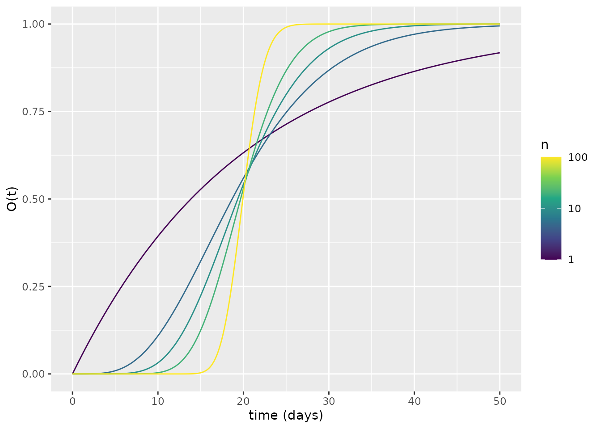
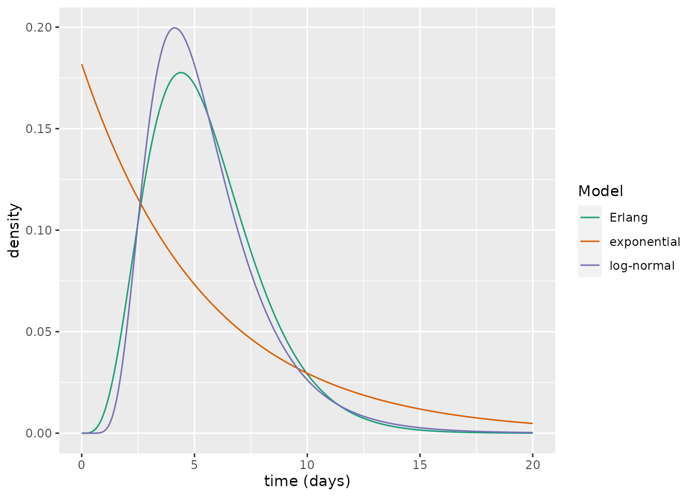

Multiple exposed compartments model
Ben Lambert and Liangti Dai
SEmIRD.RmdIntroduction
This vignette introduces the SEmIRD model. This model is an extension of the SEIRD model, which is described by the following ODEs:
\[\frac{\text{d}S}{\text{d}t} = -\beta S I,\] \[\frac{\text{d}E}{\text{d}t} = \beta S I -\kappa E,\] \[\frac{\text{d}I}{\text{d}t} =\kappa E - (\gamma + \mu) I,\] \[\frac{\text{d}R}{\text{d}t} = \gamma I,\] \[\frac{\text{d}D}{\text{d}t} = \mu I.\] In this vignette, we are going to focus on the time period that individuals spend, on average, in the exposed compartment. This time period is known as the latent period.
We can gain insight into how the flow out of the \(E\) compartment works by imagining that we exhaust the infected individuals at a given time: \(t=0\). The new equation then becomes:
\[\frac{\text{d}E}{\text{d}t} = -\kappa E,\] Supposing there is a given number of infected individuals at \(t=0\) represented by \(E=E_0\), we can solve the above equation to yield an expression for the number of exposed over time:
\[E(t) = E_0 \exp (- \kappa t)\] representing exponential decay, which we can plot assuming \(E_0=1\) and \(\kappa=0.5\):
library(tidyverse)
library(comomodels)
# function to return exponential decay
E <- function(E_0, kappa, t) {E_0 * exp(-kappa * t)}
# make values to plot
E_0 <- 1
kappa <- 0.5
t <- seq(0, 10, 0.01)
E_vals <- E(E_0, kappa, t)
tibble(t=t, E=E_vals) %>%
ggplot(aes(x=t, y=E)) +
geom_line() +
xlab("time (days)")We can also show the effect of changing \(\kappa\): unsurprisingly, as \(\kappa\) increases, the rate at which individuals become infectious increases and there is faster decay.
kappa_1 <- 0.5
kappa_2 <- 1
kappa_3 <- 2
E_1 <- E(E_0, kappa=kappa_1, t=t)
E_2 <- E(E_0, kappa=kappa_2, t=t)
E_3 <- E(E_0, kappa=kappa_3, t=t)
tibble(t, E=E_1, kappa=kappa_1) %>%
bind_rows(tibble(t, E=E_2, kappa=kappa_2)) %>%
bind_rows(tibble(t, E=E_3, kappa=kappa_3)) %>%
ggplot(aes(x=t, y=E, colour=as.factor(kappa))) +
geom_line() +
scale_color_brewer("kappa", palette = "Dark2") +
xlab("time (days)")Stochastic models and their means
An alternative way to view these exponential decay curves is as probability distributions governing the time taken for an exposed individual to become infectious: i.e. the duration of the latent period.
In our ODE, we treat the population as a continuum, and there is thus no concept of a single discrete individual. It is, however, possible to formulate discrete stochastic versions of this model which consider individual dynamics using a reaction-equation type model. Considering again the ODE:
\[\frac{\text{d}E}{\text{d}t} = -\kappa E,\] with initial condition \(E(0) = E_0\). We can create a stochastic model which is analogue to this, where the probability that a particular exposed individual becomes infectious in time period \(\delta t\) is given by \(\kappa \delta t\). We now follow Erban, Chapman, and Maini (2007) to illustrate that the mean of this stochastic process is the same as the solution of the above ODE.
We let \(p_E(t)\) denote the probability that there are \(E\) exposed individuals at time \(t\). We suppose that \(\delta t\) is so small that the probability that two exposed individuals become infectious in the period \([t,t+\delta t)\) is negligible. There are two ways for there to be \(E\) exposed individuals at time \(t+\delta t\): either there were \(E\) individuals at time \(t\) and no individual became infectious in this period with probability \((1-\kappa E \delta t)\); or there were \(E+1\) individuals at time \(t\) and one individual became infectious with probability \(\kappa (E+1) \delta t\). Therefore:
\[\begin{equation} p_E(t+\delta t) = p_E(t) (1-\kappa E \delta t) + p_{E+1}(t) \kappa (E+1) \delta t, \end{equation}\]
which can be rearranged to:
\[\begin{equation} \frac{p_E(t+\delta t) - p_E(t)}{\delta t} = \kappa(E+1)p_{E+1}(t) - \kappa E p_E(t), \end{equation}\]
taking the limit as \(\delta t\rightarrow 0\), we obtain the so-called “chemical master equation” for the system:
\[\begin{equation} \frac{\text{d}p_E}{\text{d}t} = \kappa(E+1)p_{E+1} - \kappa E p_E. \end{equation}\]
This equation holds for \(E=0,1,2,...,E_0-1\). Considering \(E=E_0\), there is only one way for this to occur, which is if no exposed individual became infectious during this period so, we obtain an equation:
\[\begin{equation} \frac{\text{d}p_{E_0}}{\text{d}t} = -\kappa E_0 p_{E_0}, \end{equation}\]
which has solution \(p_{E_0}(t) = \exp (-\kappa E_0 t)\).
(So, considering a system of a single exposed individual, the probability they remain exposed is given by an exponential distribution with rate parameter \(\kappa\) meaning the average duration of their latent period is \(1/\kappa\).)
The equation for \(E_0\) above can then be used to solve the equation for \(p_{E_0-1}(t)\) and iteratively (see Erban, Chapman, and Maini (2007) section 2.1), this leads to a solution for any integer \(0\leq E \leq E_0\):
\[\begin{equation} p_E(t) = \exp(-\kappa E t) \binom{E_0}{E} (1 - \exp(-\kappa t))^{E_0-E}. \end{equation}\]
The mean number of exposed individuals at time \(t\) is then given by:
\[\begin{align} \bar{E}(t) &= \sum_{E=0}^{E_0} E p_E(t)\\ &= \sum_{E=0}^{E_0} E \exp(-\kappa E t) \binom{E_0}{E} (1 - \exp(-\kappa t))^{E_0-E}\\ &= E_0 \exp(-\kappa t) \sum_{E=1}^{E_0} \exp(-\kappa (E-1) t) \binom{E_0-1}{E-1} (1 - \exp(-\kappa t))^{(E_0-1)-(E-1)}\\ &= E_0 \exp(-\kappa t), \end{align}\]
where the third line is obtained by using \(\binom{E_0}{E} = \frac{E_0}{E}\binom{E_0-1}{E-1}\); the last line is obtained since the sum extends over all possible values of \(E\) for a distribution starting at \(E_0-1\), which must equal 1.
The most notable aspect of \(\bar{E}(t)\) is that it matches the solution of the deterministic system. This shows that, for this system, there is an equivalence between the deterministic model and the stochastic model, where the former is a mean-field solution of the latter. This is nice because it allows us to ascribe “individual meaning” to parameters in the ODE: here, \(1/\kappa\) is the mean duration spent in the infected state for an analogous stochastic model.
The latent period for COVID-19
But what does the distribution governing the latent period actually look like? Using repeatedly sampled PCR test data from close contacts of confirmed cases in mainland China, a recent study estimated the latent period of COVID-19 as 5.5 days and a log-normal probability distribution was found to represent that waiting period (Xin et al. 2021). Below we compare the waiting period for the log-normal distribution fit in Xin et al. (2021) with an exponential distribution with the same latent period.
# values derived from Xi et al., Table S2
mu <- 1.61
sigma <- 0.44
# equivalent decay for exponential model
kappa <- 1 / 5.5
# generate densities across rate of time
t <- seq(0, 20, 0.01)
lnorm_vals <- dlnorm(t, mu, sigma)
exp_vals <- dexp(t, kappa)
tibble(t, value=lnorm_vals, model="log-normal") %>%
bind_rows(tibble(t, value=exp_vals, model="exponential")) %>%
ggplot(aes(x=t, y=value, colour=model)) +
geom_line() +
scale_color_brewer("Model", palette = "Dark2") +
ylab("density") +
xlab("time (days)")Although these share a common mean waiting period, there are considerable differences between the curves. An alternative way to view this is through the cumulative distribution functions:
lnorm_vals <- plnorm(t, mu, sigma)
exp_vals <- pexp(t, kappa)
tibble(t, value=lnorm_vals, model="log-normal") %>%
bind_rows(tibble(t, value=exp_vals, model="exponential")) %>%
ggplot(aes(x=t, y=value, colour=model)) +
geom_line() +
scale_color_brewer("Model", palette = "Dark2") +
ylab("cumulative density") +
xlab("time (days)")These cumulative distribution functions show substantial differences. For example, the exponential curve predicts that approximately 37% individuals will have become infectious after 2.5 days versus 6% for the log-normal one.
The SEmIRD model
To allow a non-exponential waiting period, a number of modelling approaches are possible and include a range of stochastic models, for instance renewal-type models and individual-based models. It is, however, possible to allow a Erlang-distributed waiting time1 in the stochastic analogue of an ODE model by splitting a stage into several substages. This is known as the “linear chain trick” (see Hurtado and Kirosingh (2019)).
In the SEmIRD model, we split the exposed compartment into \(n\) substages: \(E_1, E_2, ..., E_n\). The ODEs describing the dynamics are hence:
\[\frac{\text{d}S}{\text{d}t} = -\beta S I,\] \[\frac{\text{d}E_i}{\text{d}t} = \begin{cases} \beta S I -\kappa E_i, & \text{if } i = 1\\ \kappa E_{i-1} -\kappa E_i, & \text{otherwise} \end{cases}\]
\[\frac{\text{d}I}{\text{d}t} =\kappa E_n - (\gamma + \mu) I,\] \[\frac{\text{d}R}{\text{d}t} = \gamma I,\] \[\frac{\text{d}D}{\text{d}t} = \mu I.\] Thus a newly exposed individual (entering \(E_1\)) only becomes infectious (entering \(I\)) after they have passed through a host of intermediate states: \(E_1\rightarrow E_2 ...\rightarrow E_{n-1} \rightarrow E_n\). In the stochastic analogue of this ODE system, the average time taken to go from \(E_1\rightarrow I\) is given by a \(\text{Erlang}(n,\kappa)\) distribution, which has a mean of \(n/\kappa\). Thus to match the same mean as the exponential distribution we need to multiply \(\kappa\) by n.
Comparing the SEmIRD and SEIRD models
We now compare how this model with \(n=5\) behaves versus the SEIRD. In both cases, we assume that, at \(t=0\), all individuals are in the first exposed compartment (note, for the SEIRD model, the first exposed compartment is the only exposed compartment). To make the differences stark, we assume that the average latent period lasts 20 days. For the other parameters, we use the same set as were used in the SEIRD model vignette.
We first simulate the SEIRD model and plot the exposed and infectious compartments. In this plot, the fraction of infectious individuals grows at a fast rate right from the start and peaks somewhere near \(t=5\) days.
# parameterise model
kappa <- 1 / 20
IFR <- 0.0066
zeta <- 1 / 2
gamma <- zeta * (1 - IFR)
mu <- zeta * IFR
R0_target <- 2.4
beta <- (mu + gamma) * R0_target
model <- SEIRD()
params <- list(beta=beta, kappa=kappa, gamma=gamma, mu=mu)
transmission_parameters(model) <- params
initial_conditions(model) <- list(S0=0, E0=1, I0=0, R0=0)
# run model
times <- seq(0, 50, 0.1)
output <- run(model, times)
states <- output$states
# plot results
states %>%
filter(str_detect(compartment, "E|I")) %>%
ggplot(aes(x=time, y=value)) +
geom_line(aes(colour=compartment)) +
xlab("time (days)") +
ylab("fraction of the population")
We now repeat this exercise with the SEmIRD model. To ensure that we have the same mean duration of the latent period, we set \(\kappa_s=5\kappa\), where \(\kappa_s\) is the transit rate out of each of the \(E_i\) compartments in the SEmIRD model.
We initialise the values for the \(E_i\) compartments as a list of values, in which the size of the list will be taken as the number of exposed compartments (\(n\)), whose order corresponds to \(E_1\), \(E_2\), …, \(E_n\).
In a model with \(n=5\) exposed compartments, the plot of the exposed and infectious compartments shows the decline of initial exposed state (\(E_1\)) and the rise and fall of the intermediate states (\(E_2\) through \(E_5\)). This procession of intermediate states through which individuals must pass to become infectious means that the infectious state fraction rises much later than for the SEIRD model: here, it peaks much nearer \(t=20\) days. Effectively, allowing multiple exposed compartments induces a sort of delay between individuals becoming exposed and then transitioning to infected.
model <- SEmIRD()
# change parameters
kappa_s <- kappa * 5
params <- list(beta=beta, kappa=kappa_s, gamma=gamma, mu=mu)
transmission_parameters(model) <- params
initial_conditions(model) <- list(S0=0, I0=0, R0=0, E0 = as.list(c(1, rep(0, 4))))
# run model
output <- run(model, times)
states <- output$states
# plot results
states %>%
filter(str_detect(compartment, "E|I")) %>%
ggplot(aes(x=time, y=value)) +
geom_line(aes(colour=compartment)) +
xlab("time (days)") +
ylab("fraction of the population")
Relating \(n\) to an Erlang distribution
As described above, the waiting period implied by breaking a state into a number of substates, each with equal rate parameter, \(\kappa_s\), is an \(\text{Erlang}(n,\kappa_s)\). In our epidemiological model, this Erlang distribution is used to represent the latent period distribution, which represents how long it takes, on average, for an individual to transit from \(E\rightarrow I\).
We now demonstrate that this waiting period is represented by an Erlang distribution by simulating our model, each time with a different \(n\), assuming initially \(E_1=1\), and comparing each simulation to a corresponding Erlang probability density function. In doing so, we demonstrate that the linear chain trick works as desired (see Hurtado and Kirosingh (2019)). We select \(\kappa_s = n\kappa\) so that the Erlang distribution representing the latent period distribution has a mean of \(1/\kappa\). For each different value of \(n\), we aggregate across all exposed compartments to yield the number of individuals remaining exposed at time \(t\): \(E(t)=\sum_{i=1}^{n} E_i(t)\). We then calculate the fraction of individuals who have transitioned out of the exposed compartments, via \(O(t) = 1 - E(t)\) (note that \(O\) contains individuals who are infectious or have previously been infectious). We then plot \(O(t)\) for each model.
# function to run model with varying number of compartments but same mean
run_varying_n <- function(n, kappa) {
model <- SEmIRD()
# change parameters
kappa_s <- kappa * n
params <- list(beta=beta, kappa=kappa_s, gamma=gamma, mu=mu)
transmission_parameters(model) <- params
E_inits <- as.list(c(1, rep(0, n-1)))
initial_conditions(model) <- list(S0=0, I0=0, R0=0, E0=E_inits)
# run model
output <- run(model, times)
states <- output$states
states %>%
filter(str_detect(compartment, "E")) %>%
group_by(time) %>%
summarise(value=1 - sum(value)) %>%
ungroup() %>%
mutate(n=n)
}
# run simulations and store results
ns <- c(1, 5, 10, 20, 100)
for(i in seq_along(ns)) {
temp_df <- run_varying_n(ns[i], kappa)
if(i == 1)
big_df <- temp_df
else
big_df <- big_df %>% bind_rows(temp_df)
}
# plot O(t)
big_df %>%
ggplot(aes(x=time, y=value, group=as.factor(n))) +
geom_line(aes(colour=n)) +
scale_colour_viridis_c(trans="log",
breaks=c(1, 10, 100)) +
xlab("time (days)") +
ylab("O(t)")The plot above shows that, as \(n\) increases, there tends be a narrower period when individuals transition to becoming infectious, which is centred around \(t=20\) days. How does this relate to an Erlang distribution? To illustrate this, we transform the above into functions that behave as probability densities by finding the derivative at each time \(t\) via a finite difference approximation. We then plot the corresponding Erlang probability densities alongside the ODE-derived ones. This plot shows the correspondence between the Erlang and ODE waiting times.
# use finite difference approximation to determine derivatives
dt <- diff(big_df$time)[1]
big_df <- big_df %>%
group_by(n) %>%
mutate(value=c(NA, diff(value) / dt))
# calculate Erlang pdfs
erlang_density <- function(n, kappa) {
dgamma(times, n, kappa * n)
}
for(i in seq_along(ns)) {
dens <- erlang_density(ns[i], kappa)
temp_df <- tibble(time=times,
value=dens,
n=ns[i])
if(i == 1)
other_df <- temp_df
else
other_df <- other_df %>% bind_rows(temp_df)
}
other_df <- other_df %>%
mutate(type="Erlang")
# plot
big_df %>%
mutate(type="ODE") %>%
bind_rows(other_df) %>%
ggplot(aes(x=time, y=value, group=as.factor(n))) +
geom_line(aes(colour=n)) +
scale_colour_viridis_c(trans="log",
breaks=c(1, 10, 100)) +
xlab("time (days)") +
ylab("density or O(t)") +
facet_wrap(~type)
Comparing COVID-19 transmission dynamics
Assuming now \(\kappa=1/5.5\), which is more appropriate for COVID-19, we can compare the latent period distribution that was estimated by Xin et al. (2021) with the implied Erlang distribution of the SEmIRD model. Here, we choose \(n=5\) exposed compartments since this choice provides a good visual fit to the empirical distribution.
We plot the probability density functions of the three delay periods. From this, it is clear that the Erlang distribution is a much closer approximation to the log-normal distribution than is the exponential. The SEmIRD model thus appears a more suitable distribution than the SEIRD model for describing COVID-19 transmission dynamics.
# values derived from Xi et al., Table S2
m <- 1.61
sigma <- 0.44
# equivalent decay for exponential model
kappa <- 1 / 5.5
# generate densities across rate of time
t <- seq(0, 20, 0.01)
lnorm_vals <- dlnorm(t, m, sigma)
exp_vals <- dexp(t, kappa)
n_substates <- 5
erlang_vals <- dgamma(t, n_substates, kappa * n_substates) # Erlang is gamma with integer rate
tibble(t, value=lnorm_vals, model="log-normal") %>%
bind_rows(tibble(t, value=exp_vals, model="exponential")) %>%
bind_rows(tibble(t, value=erlang_vals, model="Erlang")) %>%
ggplot(aes(x=t, y=value, colour=model)) +
geom_line() +
scale_color_brewer("Model", palette = "Dark2") +
ylab("density") +
xlab("time (days)")But how do the epidemics produced by the SEIRD and SEmIRD models differ? We now simulate each model and plot the number of daily cases and deaths for each. From this plot, it is clear that the waves of cases or deaths produced for each model are similar, although the SEmIRD model wave is shifted so that it occurs later. This makes intuitive sense since the impact of the multiple exposed compartment substages is to induce a delay between exposure and infectiousness – effectively, resulting in a slightly delayed rise in cases and deaths.
# parameterise model
kappa <- 1 / 5.5
# parameterise SEIRD model
model_seird <- SEIRD()
params <- list(beta=beta, kappa=kappa, gamma=gamma, mu=mu)
transmission_parameters(model_seird) <- params
initial_conditions(model_seird) <- list(S0=0.999, E0=0, I0=0.001, R0=0)
# parameterise SEmIRD model
n <- 5
model_semird <- SEmIRD()
params <- list(beta=beta, kappa=kappa * n, gamma=gamma, mu=mu)
transmission_parameters(model_semird) <- params
initial_conditions(model_semird) <- list(S0=0.999, I0=0.001, R0=0,
E0=as.list(rep(0, n)))
# run both models and get cases and deaths
times <- seq(0, 150, 1)
output_seird <- run(model_seird, times)
output_semird <- run(model_semird, times)
changes_seird <- output_seird$changes %>%
mutate(model="SEIRD")
changes_semird <- output_semird$changes %>%
mutate(model="SEmIRD")
# compare cases and deaths
changes_seird %>%
bind_rows(changes_semird) %>%
filter(time > 0) %>%
ggplot(aes(x=time, y=value)) +
geom_line(aes(colour=model)) +
xlab("time (days)") +
scale_color_brewer(palette = "Dark2") +
ylab("fraction of the population") +
facet_wrap(~compartment, scales = "free")
Including multiple substages is likely to be less important if variants of SARS-Cov-2 have shorter latent periods. This is likely the case for the Delta and Omicron variants which have been shown to have shorter incubation periods (near 4 days for Delta and approximately 3 days for Omicron versus more than 5 days for SARS-CoV-2; Grant et al. (2021); Ansen et al. (2021)) – partly explaining their higher rate of spread.
The difference between the results of a single versus multiple exposed state model could, however, be even greater if, instead of an SEIRD-type model, we assumed a structure where there was a presymptomatic compartment of infectious individuals. In this instance, the nature of the delay period distribution governing the time spent in this compartment could result in different responses to some non-pharmaceutical interventions: for example, an intervention involving early detection and isolation of infected individuals.
References
Ansen, Lauren, Bryan Tegomoh, Kate Lange, Kimberly Showalter, Jon Figliomeni, Baha Abdalhamid, Peter C. Iwen, Joseph Fauver, Bryan Buss, and Matthew Donahue. 2021. “Investigation of a Sars-Cov-2 B.1.1.529 (Omicron) Variant Cluster — Nebraska, November–December 2021.” {https://www.cdc.gov/mmwr/volumes/70/wr/mm705152e3.htm}.
Erban, Radek, Jonathan Chapman, and Philip Maini. 2007. “A Practical Guide to Stochastic Simulations of Reaction-Diffusion Processes.” arXiv Preprint arXiv:0704.1908.
Grant, Rebecca, Tiffany Charmet, Laura Schaeffer, Simon Galmiche, Yoann Madec, Cassandre Von Platen, Olivia Chény, et al. 2021. “Impact of Sars-Cov-2 Delta Variant on Incubation, Transmission Settings and Vaccine Effectiveness: Results from a Nationwide Case-Control Study in France.” The Lancet Regional Health-Europe, 100278.
Hurtado, Paul J, and Adam S Kirosingh. 2019. “Generalizations of the "Linear Chain Trick": Incorporating More Flexible Dwell Time Distributions into Mean Field Ode Models.” Journal of Mathematical Biology 79 (5): 1831–83.
Xin, Hualei, Yu Li, Peng Wu, Zhili Li, Eric HY Lau, Ying Qin, Liping Wang, Benjamin J Cowling, Tim Tsang, and Zhongjie Li. 2021. “Estimating the Latent Period of Coronavirus Disease 2019 (Covid-19).” Clinical Infectious Diseases: An Official Publication of the Infectious Diseases Society of America.